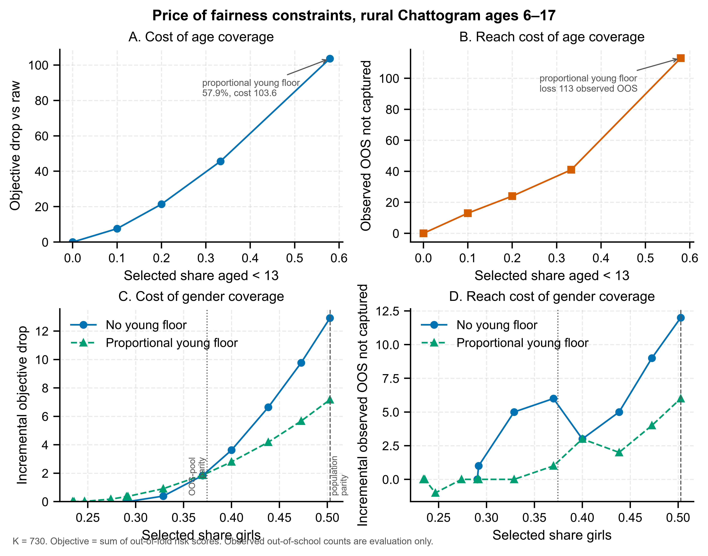

Project summary
This project builds a reproducible decision-support workflow for allocating limited educational support among rural children aged 6-17 in Chattogram, Bangladesh. It starts from verified MICS 2019 microdata, constructs an out-of-fold out-of-school risk score, and then prices the trade-off between predictive reach and explicit fairness coverage constraints.
Verified numbers
| Item | Verified value |
|---|---|
| Raw rural Chattogram sample | 4,891 children |
| Modeling-ready sample | 4,861 children |
| Selection budget K | 730 children, about 15% |
| Observed out-of-school children | 641 |
| Unweighted out-of-school rate | 13.19% |
| Provisional child-weighted out-of-school rate | 14.52% |
| Out-of-fold ROC-AUC, unweighted | 0.8398 |
| Out-of-fold ROC-AUC, provisional child-weighted | 0.8520 |
| Raw-risk observed OOS captured | 332 of 641, 51.8% |
| Raw-risk selected share aged < 13 | 0.14%, only 1 child |
| Raw-risk selected share girls | 29.04% |
| Age+gender interaction, unweighted objective | -5.740 objective units, subadditive |
Figure: price of fairness constraints

Vector figure: PDF
Panels A and B price the under-13 floor: the x-axis is the required minimum share of selected children aged under 13; in A the y-axis is the loss in total out-of-fold risk relative to the unconstrained allocation, and in B it is the additional observed out-of-school children left uncaptured. Panels C and D price the girls floor on the same axes, with and without the proportional under-13 floor already in place. In C and D the dotted grey line marks the female share among observed out-of-school children (37.4%) and the dashed grey line marks the female share among all children in the sample (50.3%); these are reference points, not constraints. The girls floor costs less once the age floor is present, which is the subadditivity reported in the policy table below (interaction -5.74 at the proportional corner).
Policy scenario table
The objective is the sum of out-of-fold predicted risk scores. Observed out-of-school capture is an evaluation metric only; it is not used as the optimization target.
| Scenario | Young floor | Girls floor | Young % | Girls % | Poorest % | Objective | Obj drop | Obj drop % | Captured OOS | Capture drop | Interaction | Proven optimal |
|---|---|---|---|---|---|---|---|---|---|---|---|---|
| raw risk no floors | 0 | 0 | 0.1% | 29.0% | 41.9% | 325.66 | 0.00 | 0.00% | 332 | 0 | 0.000 | yes |
| girls 40pct only | 0 | 292 | 0.0% | 40.0% | 45.8% | 322.04 | 3.62 | 1.11% | 329 | 3 | 0.000 | yes |
| girls parity only | 0 | 367 | 0.0% | 50.3% | 45.6% | 312.75 | 12.91 | 3.97% | 320 | 12 | 0.000 | yes |
| young 10pct only | 73 | 0 | 10.0% | 25.1% | 46.7% | 318.08 | 7.58 | 2.33% | 319 | 13 | 0.000 | yes |
| young 20pct only | 146 | 0 | 20.0% | 22.9% | 49.7% | 304.27 | 21.39 | 6.57% | 308 | 24 | 0.000 | yes |
| young 33pct only | 243 | 0 | 33.3% | 24.2% | 52.1% | 280.05 | 45.62 | 14.01% | 291 | 41 | 0.000 | yes |
| young proportional only | 423 | 0 | 57.9% | 23.4% | 56.2% | 222.02 | 103.64 | 31.82% | 219 | 113 | 0.000 | yes |
| young 33pct girls 40pct | 243 | 292 | 33.3% | 40.0% | 55.3% | 276.47 | 49.19 | 15.10% | 278 | 54 | -0.054 | yes |
| young 33pct girls parity | 243 | 367 | 33.3% | 50.3% | 54.5% | 270.23 | 55.44 | 17.02% | 272 | 60 | -3.095 | yes |
| young proportional girls 40pct | 423 | 292 | 57.9% | 40.0% | 56.4% | 219.23 | 106.44 | 32.68% | 216 | 116 | -0.828 | yes |
| young proportional girls parity | 423 | 367 | 57.9% | 50.3% | 57.1% | 214.85 | 110.81 | 34.03% | 213 | 119 | -5.740 | yes |
Method in brief
1. Data provenance
The public site uses only aggregate outputs. The raw analysis source is the Bangladesh MICS 2019 child file fs.sav. The sample is rural Chattogram, ages 6-17, with valid school attendance. This gives 4,891 children. The modeling-ready sample excludes 30 children because of incomplete interview/zero weight or missing core features, leaving 4,861 children.
2. Risk model
A logistic regression model predicts out-of-school status using complete core covariates: age, sex, wealth quintile, mother's education, ethnic minority status, disability flag, and child work. The score used for optimization is out-of-fold, produced by 5-fold grouped cross-validation grouped by PSU.
The model is fitted without sample weights. Survey weights are used for evaluation. The primary child weight is provisionally treated as fsweight, while fshweight is kept as a normalized sensitivity weight.
3. Allocation model
Let xi = 1 if child i is selected and ri be the out-of-fold risk score. The baseline problem is
Fairness versions add lower-bound coverage constraints such as
The integer programs were solved with SciPy's MILP interface using HiGHS. The relative MIP gap was set to zero, so the reported solutions are proven optimal for the stated models. The young-floor cases were also cross-checked against an independent exact greedy reference.
Data access and privacy
MICS microdata contain household and child identifiers. Raw .sav files and derived child-level CSV files are kept local and are not published in the repository. This website publishes only aggregate tables, aggregate curves, figures, and code. No child-level records are included.
AI use disclosure
AI tools were used for code, debugging, and drafting parts of this page's text. Every methodological decision, data check, number, and final wording was reviewed, corrected, and approved by the author. A dated, step-by-step record of AI-assisted work is kept in AI use log.
Files used by this page
- phase3_fairness_summary.csv
- phase3_fairness_curves.csv
- phase3_fairness_curves_publication.png
- phase3_fairness_curves_publication.pdf

Reproduce and status
A public Colab notebook reproduces the four-panel fairness figure and the policy table from the committed aggregate grid, with no microdata and no solver re-run. A working-paper draft is still in preparation, so no link is given for it until it exists.